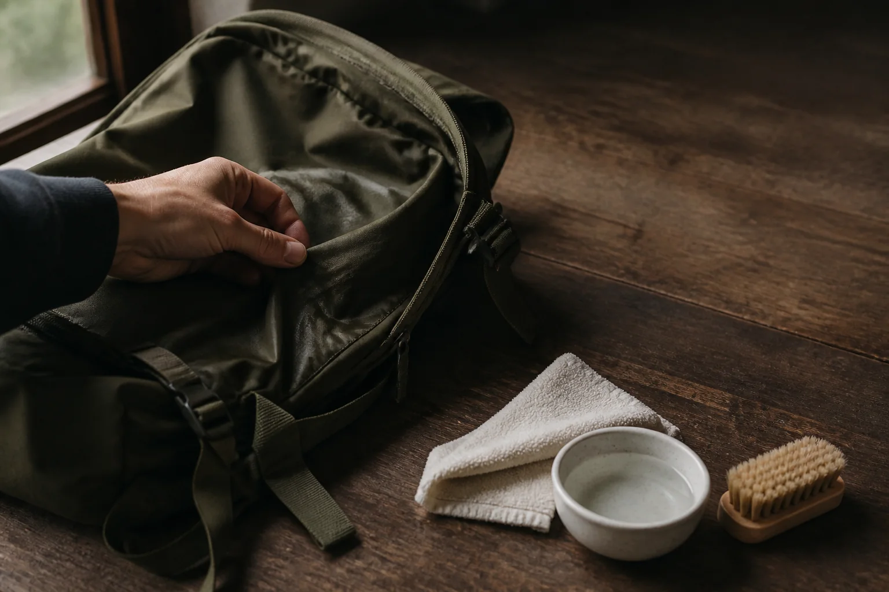

백팩 소재별 표면 관리법: 나일론과 폴리에스터를 살피는 순서

백팩의 라벨에 나일론 또는 폴리에스터라고 적혀 있어도 그것만으로 세탁 방법이 결정되지는 않습니다. 겉감에 더해 코팅, 안감, 지퍼, 가죽 장식과 접착 부위가 함께 있기 때문입니다. 소재 이름은 출발점으로 보고, 제품의 관리 표시와 실제 오염 범위를 먼저 확인하는 것이 안전합니다.
1. 관리 표시와 부자재부터 확인하세요
가방을 비운 뒤 안쪽 라벨이나 제품 안내에서 세탁·건조 방법을 찾습니다. 물세탁 금지, 표백제 금지처럼 명확한 안내가 있다면 이를 우선하세요. 라벨이 없거나 읽기 어렵다면 전체를 물에 담그기보다 마른 천으로 먼지를 제거하고 작은 부분 관리부터 시작합니다.
겉감과 다른 색의 안감, 금속 장식, 가죽 또는 합성가죽 장식이 있다면 각각 물과 마찰에 반응하는 방식이 다를 수 있습니다. 한 가지 방법을 가방 전체에 바로 적용하지 않는 이유입니다.
2. 오염을 먼지·얼룩·습기로 나누세요
표면에 얹힌 먼지는 부드러운 마른 솔이나 천으로 결을 따라 가볍게 털어냅니다. 국소적인 얼룩은 깨끗한 흰 천에 소량의 물을 묻혀 눌러 보되, 눈에 띄지 않는 바닥이나 안쪽 솔기에서 색 변화가 없는지 먼저 시험하세요. 젖은 상태라면 닦기 전에 비에 젖은 백팩을 말리는 순서에 따라 수납칸 안쪽까지 건조합니다.
3. 부분 관리는 넓히지 말고 경계를 좁게
시험한 부분에 문제가 없다면 오염의 바깥쪽에서 안쪽을 향해 천으로 가볍게 눌러 닦습니다. 세게 문지르면 얼룩의 범위가 넓어지거나 표면 질감이 달라질 수 있습니다. 세정제가 필요한 경우에도 제품 안내가 허용하는 종류와 양을 따르고, 임의로 여러 제품을 섞지 않습니다.
나일론과 폴리에스터라는 이름만 보고 뜨거운 물, 표백제, 강한 솔을 사용하는 것은 피하세요. 같은 섬유라도 직조, 염색, 코팅과 부자재가 다르면 관리 결과가 달라질 수 있습니다.
4. 형태를 펴고 그늘에서 완전히 말리세요
부분 관리가 끝나면 마른 천으로 남은 물기를 눌러 덜어냅니다. 지퍼와 포켓을 열고 가방 형태를 가볍게 편 상태로 통풍되는 그늘에서 자연 건조하세요. 난방기나 헤어드라이어의 강한 열을 가까이 대지 말고, 안감과 솔기까지 마른 뒤 물건을 다시 넣습니다.
소재 관리 전 5문장 점검표
- 제품의 관리 표시를 읽었나요?
- 가방 속 내용물을 모두 비웠나요?
- 부자재와 장식 소재를 함께 확인했나요?
- 눈에 띄지 않는 부분에서 먼저 시험했나요?
- 전체 세탁보다 작은 오염의 부분 관리가 가능한가요?
평소에는 사용 후 먼지를 털고 내부를 비우는 짧은 습관만으로도 다음 관리 시점을 알아차리기 쉽습니다. 보관 전에는 백팩 형태를 유지하는 보관 순서도 함께 확인하세요.
참고·안내
- Himawari 제품별 소재·수납 정보
- 세탁과 건조는 각 제품의 관리 표시를 우선해 주세요.
자주 묻는 질문
나일론과 폴리에스터 백팩은 같은 방법으로 닦아도 되나요?
섬유 이름만으로 관리법을 단정하기 어렵습니다. 코팅, 안감, 장식과 접착 방식이 다를 수 있으므로 제품의 관리 표시를 먼저 확인하고 작은 부분에 시험하세요.
오염이 작아도 가방 전체를 세탁해야 하나요?
작은 표면 오염이라면 관리 표시가 허용하는 범위에서 부분 관리부터 시도할 수 있습니다. 전체 세탁 여부는 제품 안내와 오염 상태를 기준으로 판단하세요.
닦은 뒤 햇볕에 말려도 되나요?
직사광선과 강한 열은 일부 소재의 색이나 표면에 영향을 줄 수 있습니다. 별도 지시가 없다면 형태를 펴서 통풍되는 그늘에서 말리는 편이 좋습니다.